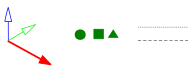
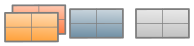
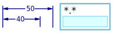

1.2. Documentation and help
Show help → |
There are various ways to familiarise yourself with the use of the software.
Note
If you are unsure how to use the software, please contact Support.
Brief information on commands and options is displayed at the top right in the menu bar of the program window. In command dialogues, the F1 key provides context-sensitive help information. To access the information, rest the cursor on the required context. Use Help at the top right of command dialogues to access information directly related to the context To do this, then click the required context with the left mouse button. The software documentation is available as an electronic document in PDF format. Readme documents contain notes on the current software version and updates that have not yet been included in the software documentation and help. Help information on CAM programming is available in a separate help section. Please refer to the documentation provided for information on the CAM programming of tires.
Illustration (principle) | Explanation |
|---|---|
Select, for example, click, double-click Indicates an explanation in the text Next step | |
Symbol shows the alignment of the data in the illustration. Dimension-related data | |
 | Workplane and/or direction Handles Guide lines (different colors and shapes) |
Point (selected, created, not selected) Position, control point or similar | |
Curve (selected, created, not selected) V-sketch Toolpath | |
 | Face (selected, created, not selected) |
Boundary selected Mesh Reference plane | |
Solid | |
 | Text or dimension File |
A short description precedes each command in the software documentation, in order to provide a quick overview of the command. This description always has the same structure:
 The command name.
The command name.
 The command icon, which is particularly important to find the command in toolbars.
The command icon, which is particularly important to find the command in toolbars.
 A short description of the command.
A short description of the command.
 A path to find the command, for example, in the menu structure.
A path to find the command, for example, in the menu structure.
 The license, if a separately available license must be purchased.
The license, if a separately available license must be purchased.